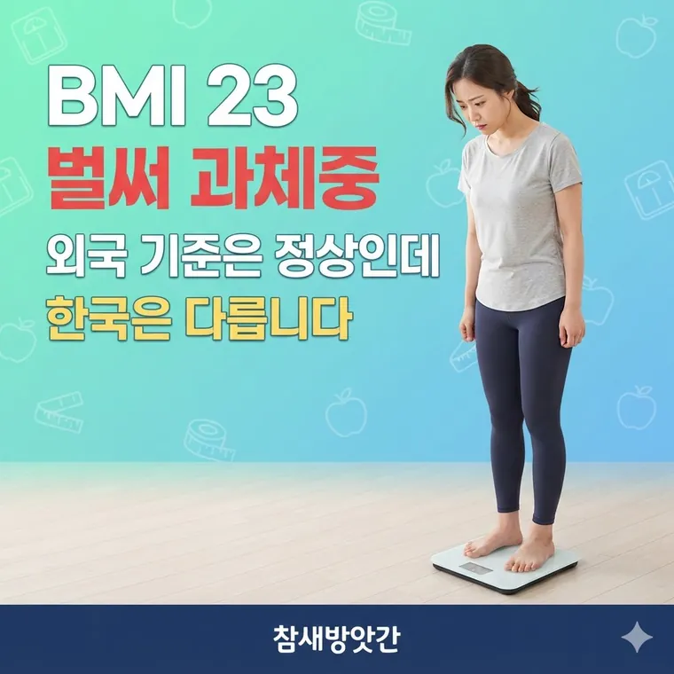

BMI 아시아 태평양 기준 차이점: 서양 기준과 다른 비만 판정 수치 총정리
해외 앱에서는 정상이라고 나왔는데 건강검진에서는 과체중이 나옵니다. 둘 다 맞습니다. 쓰는 기준이 다르기 때문입니다.

계산은 몸무게를 키의 제곱으로 나눕니다
BMI는 몸무게(kg) ÷ 키(m)의 제곱으로 구합니다.
키를 센티미터가 아니라 미터로 바꿔서 제곱하는 게 중요합니다. 170cm는 1.7m입니다.
68 ÷ (1.7 × 1.7) = 68 ÷ 2.89 = 23.5
세계보건기구 기준으로는 정상
한국에서 쓰는 기준으로는 과체중
같은 숫자인데 판정이 다릅니다
기준이 두 개이기 때문입니다. 한국을 비롯한 아시아·태평양 지역은 세계보건기구의 일반 기준보다 낮은 선에서 구간을 끊습니다.
| 구분 | 세계보건기구 기준 | 아시아·태평양 기준 |
|---|---|---|
| 저체중 | 18.5 미만 | 18.5 미만 |
| 정상 | 18.5~24.9 | 18.5~22.9 |
| 과체중 | 25~29.9 | 23~24.9 |
| 비만 | 30 이상 | 25~29.9 |
| 고도비만 | 35 이상 | 30 이상 |
눈여겨볼 곳은 25입니다. 세계 기준으로는 과체중이 시작되는 지점인데, 한국 기준으로는 이미 비만 구간입니다. 한 칸씩 당겨져 있는 셈입니다.
해외 앱이나 외국 사이트 계산기는 대부분 세계보건기구 기준을 씁니다. 국내 의료기관은 대한비만학회의 아시아·태평양 기준을 따릅니다. 그래서 같은 몸으로 두 가지 결과가 나옵니다.
왜 아시아만 기준이 낮은가
몸의 구성이 다르기 때문입니다. 같은 BMI라도 아시아 사람은 체지방이 차지하는 비율이 높은 편입니다.
특히 배 안쪽에 쌓이는 내장지방이 잘 붙는 특성이 있습니다. 겉으로는 그렇게 안 보여도 안쪽에 쌓여 있는 경우가 많습니다.
체지방과 내장지방 비중이 높으면 더 낮은 수치에서도 당뇨나 고혈압 같은 만성질환 위험이 올라간다는 연구가 쌓였습니다. 그래서 세계보건기구 서태평양지역사무처와 아시아 국가들이 2000년에 더 낮은 기준을 따로 만들었습니다.
기준을 낮게 잡는 것은 겁을 주려는 게 아닙니다. 더 일찍 관리하라는 신호를 주는 쪽에 가깝습니다.
키별로 과체중이 시작되는 몸무게
BMI 23이 되는 지점을 키별로 적어보면 이렇습니다.
| 키 | BMI 23 (과체중 시작) | BMI 25 (비만 시작) |
|---|---|---|
| 155cm | 55.3kg | 60.1kg |
| 160cm | 58.9kg | 64.0kg |
| 165cm | 62.6kg | 68.1kg |
| 170cm | 66.5kg | 72.3kg |
| 175cm | 70.4kg | 76.6kg |
| 180cm | 74.5kg | 81.0kg |
BMI만으로는 알 수 없는 것
BMI는 키와 몸무게 두 개만 씁니다. 그래서 몸무게 안에 근육이 얼마고 지방이 얼마인지 구분하지 못합니다.
근육이 많은 운동선수는 체지방이 아주 적어도 BMI는 비만으로 나옵니다. 반대로 몸무게는 가벼운데 근육이 적고 내장지방이 많은 경우에는 BMI가 정상으로 나옵니다. 흔히 말하는 마른 비만입니다.
그래서 BMI는 집단의 흐름을 보거나 대략 가늠할 때 쓰는 지표로 보는 편이 맞습니다.
허리둘레를 같이 봅니다
BMI의 빈틈을 메우는 가장 간단한 방법은 허리둘레입니다. 내장지방을 짐작할 수 있기 때문입니다.
국내 기준으로 남성 90cm 이상, 여성 85cm 이상이면 BMI와 상관없이 복부비만으로 봅니다.
재는 방법도 정해져 있습니다. 숨을 내쉰 상태에서, 갈비뼈 아래쪽과 골반뼈 위쪽의 중간 지점을 줄자가 수평이 되게 두르고 잽니다. 배꼽 높이가 아닙니다.
체성분 분석기를 쓸 수 있다면 체지방률과 근육량을 직접 보는 것이 더 낫습니다. 보건소나 헬스장에 있는 경우가 많습니다.
여기 적은 것은 학회가 정한 분류 기준을 안내한 것입니다. 숫자 하나로 건강 상태가 정해지지 않습니다. 진단과 치료는 의사의 영역이니 걱정되는 점이 있으면 진료를 받아보시기 바랍니다.
자주 묻는 질문
몸무게(kg)를 키(m)의 제곱으로 나눕니다. 키를 센티미터가 아닌 미터로 바꿔 계산해야 합니다. 170cm에 68kg이면 68 ÷ (1.7 × 1.7) = 23.5입니다.
기준이 다르기 때문입니다. 세계보건기구 기준은 25부터 과체중이지만 한국이 쓰는 아시아·태평양 기준은 23부터 과체중, 25부터 비만입니다. 둘 다 틀린 것이 아니라 적용하는 기준이 다릅니다.
같은 BMI라도 아시아인은 체지방 비율이 높고 내장지방이 쌓이기 쉬운 편이라, 더 낮은 수치에서도 만성질환 위험이 올라간다는 연구 결과가 반영됐습니다. 더 일찍 관리하도록 기준을 당긴 것입니다.
BMI는 근육과 지방을 구분하지 못해 한계가 있습니다. 허리둘레를 함께 보는 것이 좋으며 국내 기준으로 남성 90cm, 여성 85cm 이상이면 BMI와 무관하게 복부비만으로 봅니다. 정확한 평가는 의료진과 상담하는 것이 맞습니다.